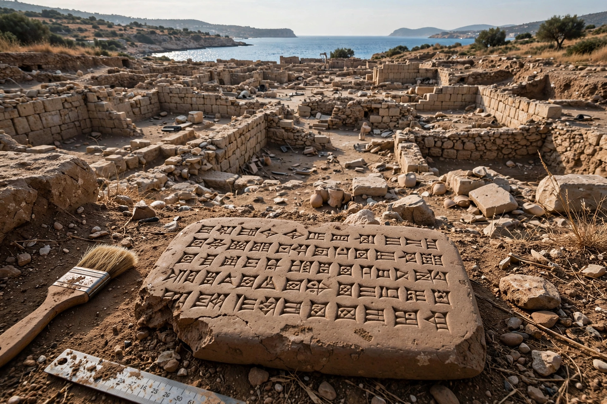

Ugarit

| Ugarit | |
| Location | Ras Shamra, Latakia Governorate, Syria |
|---|---|
| Flourished | c. 1450–1190 BC (Late Bronze Age) |
| Destroyed | c. 1190 BC, during the Late Bronze Age collapse |
| Rediscovered | 1928 (Minet el-Beida); excavations from 1929 under Claude Schaeffer |
Ugarit was an ancient port city-state on the Mediterranean coast of what is now Syria, near modern Latakia. Occupied since the Neolithic period, it reached its height in the Late Bronze Age (c. 1450–1190 BC) as a wealthy trading hub linking Mesopotamia, Egypt, Cyprus (Alashiya), and the Aegean. Its ruins, at Ras Shamra, were identified in 1929 after a local farmer's plough struck a tomb at Minet el-Beida.
The Ugaritic texts
Excavations led by Claude F. A. Schaeffer uncovered palace archives containing thousands of clay tablets. Most remarkable were texts written in the Ugaritic language in a unique cuneiform alphabet of about 30 signs — one of the earliest alphabets, an abjad pressed into clay with a stylus. Deciphered within a few years by scholars including Hans Bauer, Charles Virolleaud, and Édouard Dhorme, the tablets transformed understanding of Canaanite religion and the background of the Hebrew Bible.
Religion and literature
The mythological texts describe the Canaanite pantheon: El, the aged chief god; his consort Asherah; Baal, the storm god, hero of the Baal Cycle; the goddess Anat; and the craft god Kothar-wa-Khasis. Epics such as the Legend of Keret and the Tale of Aqhat, and poems describing Baal's battles with Yam (Sea) and Mot (Death), show close parallels in imagery and language to biblical poetry.
Destruction
Ugarit was destroyed around 1190 BC, apparently in the upheavals of the Late Bronze Age collapse associated with the Sea Peoples; a letter from its last king, Ammurapi, describes enemy ships burning coastal towns while the kingdom's troops were away. The city was never substantially reoccupied.
See also: Abjad, Proto-Sinaitic script